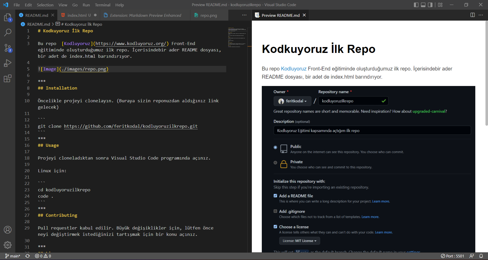

Visual Studio Code kullanarak Markdown Preview Enhanced eklentisi sayesinde Readme dosyalarınızı kolaylıkla hazırlayabilirsiniz.
Markdown, John Gruber ve Aaron Swartz tarafından geliştirilmiş ve 2004 yılından bu yana kullanılan açık bir formattır. En basit tanımı ile, web yazarları için text-to-HTML (metinden HTML’e) dönüştürme aracıdır. Markdown tasarımının temel hedefi geliştiricileri tarafından okunulabilirlik (readability) olarak belirtilmektedir1. Bu amaçla e-posta yazımı temelinde ağırlık göstermektedir. Daha detaylı bir tanım olarak, düz metin biçimlendirme (markup language) sözdizimine (syntax) sahip hafif bir düz metin biçimlendirme dili (plain text formatting syntax) olarak ifade edilebilir. Aynı isimli araç sadece HTML dilini desteklese de günümüzde pek çok formatta çıktı üretebilmek için de kullanılmaktadır.
Markdown kullanımı için CommonMark bağlantısını ziyaret edebilirsiniz.